Example Graphs
Checkout our example graphs here.
If you're looking for workflow checkout our workflow and transition map here.
Editors

The editor is made of a graph (the stage view) in the middle, surrounded by dock widgets that can be moved, tabbed and closed: the Layer Manager, Property Editor, Code Editor, History View, Build View, Workflow Tools, Output Log and Hotkey Editor. Closed docks come back from the Window menu.
Docks and layout
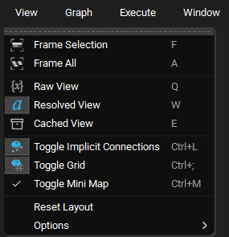
- Float a dock by dragging its title bar or tab out of the window, or, where several docks share a space as tabs, by double clicking its tab.
- Dock it again by dragging it back over the window until a space opens for it, or by double clicking its title bar, which returns it to where it was docked last.
- View > Reset Layout puts every dock back where a fresh install has it, with its default size. It resets to the editor's own layout, not to the one you left at the end of your last session. The layout you leave the editor in is still remembered for next time.
Stage View
The stage view draws the composited graph for the open tab. Each tab is composited and drawn the first time it is selected, and kept from then on, so switching back to a tab is instant.
Mini map
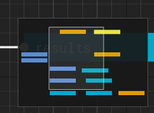
The mini map in the bottom right corner shows the whole graph, the selected nodes, and a rectangle for the part of the graph the view is showing.
- Click anywhere in the mini map to centre the view there, or drag in it to pan.
- Toggle it with View > Toggle Mini Map or
Ctrl+M. The choice is remembered between sessions.
Animate Nodes
Nodes no longer slide open when a parent is expanded. Every child is animated separately, so a node with hundreds of children opens noticeably slower that way. The Animate Nodes action turns the animation back on. It is listed under Graph in the Hotkey Editor, where you can give it a shortcut, and the choice is remembered between sessions.
Deleting and pasting nodes
Del removes the selected node from the target layer. If no other layer has
an opinion on the deleted node's path, its descendants are removed with it,
so nothing is left behind as an implied "ghost" node. If another layer does
provide the node, the node from that layer shows through, as you would
expect from layering. Shift+Del deletes the node and all of its
descendants.
Pasting nodes (Ctrl+V) is a single step on the undo stack however many
nodes are pasted.
Code Editor
The code editor shows the compute of the selected node. It is read only
until you double click into it. Accept your edit with Ctrl+Enter, the
numpad Enter, or by clicking off the code, and cancel it with Esc.
The shortcuts below only apply while the code editor has focus, so for
example Ctrl+D expands the selection in the code editor but duplicates the
selected node in the graph. While the code editor, or one of its find
fields, has focus the main window's shortcuts are suspended so typing cannot
trigger them. All of these can be rebound in the
Hotkey Editor, and most are also on the code
editor's right click menu, with the line commands under Line.
| Action | Shortcut | Notes |
|---|---|---|
| Find In Code | Ctrl+F |
Opens the find panel, filled in with the selected text |
| Replace In Code | Ctrl+H |
Opens the find panel with the replace row showing |
| Find Next / Find Previous | F3 / Shift+F3 |
Wraps around at either end |
| Go To Line | Ctrl+G |
|
| Duplicate Line | Ctrl+Shift+D |
Copies the selected line(s) below |
| Move Line Up / Down | Alt+Up / Alt+Down |
|
| Delete Line | Ctrl+Shift+K |
|
| Expand Selection | Ctrl+D |
The word under the cursor, then the line, then everything |
| Complete Word | Ctrl+Space |
See Completion |
| Go to a token's node | Ctrl+click |
See Following tokens |
| Indent / Un-Indent Line | Tab / Shift+Tab |
Works on several lines at once |
| Comment Line | Ctrl+/ |
|
| Execute Selection Locally | Shift+Return |
|
| Execute Selection Globally | Ctrl+Shift+Return |
|
| Copy Resolved Code | Ctrl+Shift+C |
Two kinds of find
Ctrl+F in the code editor searches the compute you are looking at.
Ctrl+F anywhere else opens the graph wide Find and Replace, which
searches node attributes across the whole stage.
Find and replace
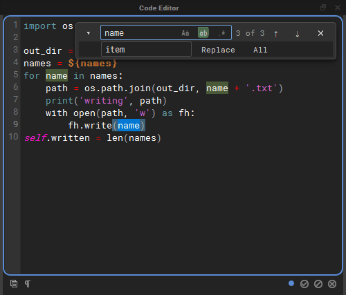
The find panel floats over the top right corner of the code, so the code never moves when it opens.
- Type in the Find field and every match is highlighted, with the
current match in a stronger colour. The counter shows which match you are
on (
3 of 3), orbad patternwhen a regular expression is not valid. EnterandShift+Enterin the field,F3andShift+F3, or the arrow buttons step through the matches.- The three toggles inside the field are regular expression (
.*), whole word (ab) and match case (Aa). - The chevron on the left shows the replace row. Replace replaces the current match and moves on to the next one; All replaces every match in one undoable step. Replacing needs the editor to be in editing mode; while it is read only the panel says double click to edit.
Esccloses the panel.
Go to line
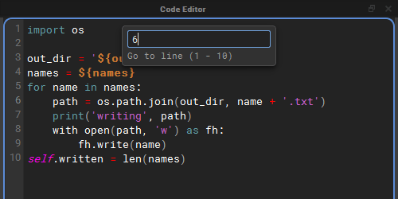
Ctrl+G drops a small field from the top of the editor. The view scrolls to
the line as you type, Enter goes there, and Esc puts the cursor back
where it was before you started.
Highlighting
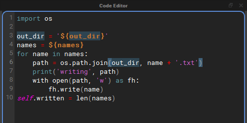
Every use of the word under the cursor is highlighted, and so is the bracket next to the cursor together with its partner. A bracket without a partner is drawn in a warning colour.
Syntax colouring applies to every match on a line, so a line with several tokens or strings has all of them coloured, not only the first.
Auto-pairing
While you edit, brackets and quotes come in pairs:
- Typing
(,[,{,"or'adds the closing character after the cursor, so typing${gives${}with the cursor inside. - Typing a closing character that is already right after the cursor steps over it rather than adding a second one, so typing the closer yourself out of habit does no harm.
- With text selected, typing an opening bracket or a quote wraps the selection in the pair, and the text stays selected.
- A quote typed straight after a letter or digit, or before one, is just
typed, so apostrophes and string prefixes such as
f'work as usual. Typing"""gives exactly three quotes. - Keyboard layouts that type
[and{withAltGrpair them too. - Accepting a token completion inside
${}does not leave a spare}behind.
Following tokens

In Raw View (Q), where the code shows its ${} tokens, the tokens can be
inspected and followed:
- Hover a token that reads an attribute, such as
${/settings.out_dir}or a local${suffix}, to see the value it resolves to in a tooltip. If the token names a node that does not exist, the tooltip says so instead.${file::},${contents::},${path::}and tokens added by plugins are never resolved by hovering, because resolving them reads files or runs plugin code. Ctrl+clicka token that reads an attribute of another node to select that node in the graph and frame it. WhileCtrlis held, the mouse pointer turns into a pointing hand over a token you can follow. A token that reads the node's own attribute stays where it is, and a token naming a node that does not exist logs a warning.
Ctrl+click does nothing while you are editing the code, so it can never
take you to another node, and accept your edit on the way, by accident.
Completion
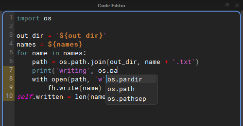
Ctrl+Space offers completions for the word in front of the cursor. Use the
arrow keys to choose one and Enter or Tab to insert it; Esc closes the
list. With Code Editor Autocomplete on, the list also appears by itself
once you have typed two characters of a word.
Completions come from six sources:
| Source | What it offers |
|---|---|
| Python Builtins | Python's keywords and builtins, such as return and enumerate. |
| Imported Modules | Names inside the modules this compute imports, and inside the modules the world node (/) imports, since every compute can use those: os.pa offers os.path, and os.path.jo offers os.path.join. Aliases such as import numpy as np are understood. Only modules named on import lines are looked at, and a module that fails to import is skipped. |
| Node Attributes And Tokens | The node's attributes written as name, self.name and ${name}; the names nxt gives every compute, STAGE, self, w, execute, nxt_path, ExitNode, ExitGraph and types (nxt_path. looks inside it); the token prefixes nxt knows about, including any added by plugins: ${file::, ${filelist::, ${path:: and so on; and node paths inside ${/. |
| Words In This Compute | Words already written in the compute, which catches your own variable names. |
| Host Modules | The modules the host application already has loaded, under the names scripts usually give them, so they complete before any import line is written: cmds, mc, mel, om, oma, omui, omr and pm in Maya, unreal in Unreal, bpy in Blender, pyfbsdk in MotionBuilder and pymxs in 3ds Max. Only modules the host has already loaded are offered; nothing is imported for them. In the standalone editor there are none. |
| Python Analysis (jedi) | Optional. Uses jedi to work out what a name is, so that after a dot it can complete what a call returns or what a variable holds. See Python analysis with jedi. |
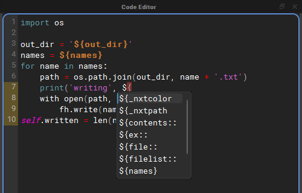
Node paths and their attributes

Inside a token that starts with ${/, completion offers the paths of the
nodes in the graph (${/settings, ${/export/report). Once a node path is
followed by a dot, it offers that node's attributes as whole tokens, so
choosing one writes ${/settings.out_dir} complete with its closing brace.
Python analysis with jedi
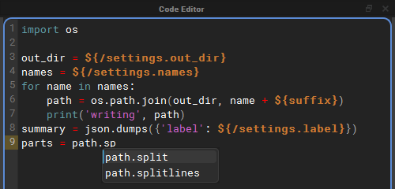
The other sources read names: they can complete os.path.jo because os
is imported, but not what os.path.join(...) returns. jedi analyses the
code, so after path = os.path.join(out_dir, name) it knows path is a
string and offers path.split and path.splitlines.
- It is optional. Install it with
pip install nxt-editor[completion](see Standalone Installation). Without it, Python Analysis (jedi) is greyed out in the menu, and its description says how to install it. - It is only asked after a dot. Bare names still come from the other sources, so switching one of those off keeps its names out of the list.
- It is asked once typing pauses, or straight away with
Ctrl+Space. The answer is kept while you type more of the same name. - It sees the world node's imports and the names nxt gives every compute.
${}tokens are read as plain strings, so a compute full of tokens can still be analysed. - jedi is loaded the first time it is needed, not when the editor starts, and keeps its cache in the nxt user directory.
Autocomplete options
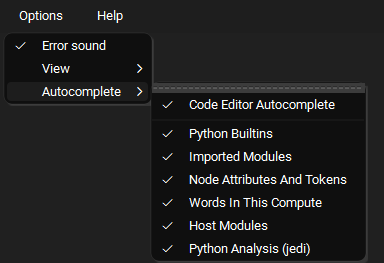
Options > Autocomplete holds the completion switches. They are all on by default and remembered between sessions, and a change applies straight away, even to a list that is already open.
- Code Editor Autocomplete: offer completions while you type. When it is
off, completions only appear when you press
Ctrl+Space. - Python Builtins, Imported Modules, Node Attributes And Tokens, Words In This Compute, Host Modules and Python Analysis (jedi): the sources described above.
Layer Manager
The Layer Manager lists the layers of the open graph: the top layer and, nested under it, the layers it references. Right click a layer for its menu.
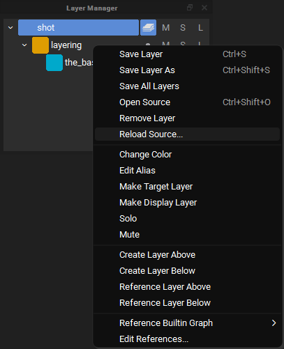
Two items on this menu change what a layer pulls in from disk: Edit References... and Reload Source....
Reference Editor
Edit References... opens the Reference Editor on that layer.
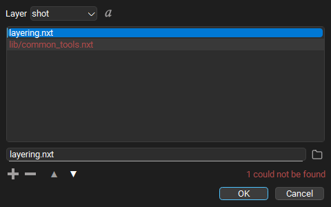
- Layer picks which layer's references you are editing. Only layers that are open in this graph and not locked can be edited.
- The list holds that layer's references in stack order: a reference higher in the list is stronger than the ones below it. Drag a row, or use the up and down arrow buttons, to change the order.
- The field under the list edits the selected reference. What you type is stored exactly as written, so a path with an environment variable in it, a path relative to the layer, or a path under one of your file roots keeps working on other machines. The folder button next to the field picks a file with a file browser instead. A picked file that sits next to the layer, or in a folder below it, is stored relative to the layer; anything else is stored as a full path. A relative path is looked for under your file roots before the layer's folder, so check the resolved view if a root might hold a file of the same name.
- + adds an empty row and puts the cursor in the field, ready to type. An empty row that is never filled in is dropped. - removes the selected reference.
- The resolved toggle next to the layer picker switches every row between the path as stored and where it resolves to on this machine. Resolved paths are only for looking: they cannot be edited, so this machine's answer is never written into the layer.
- Missing references are drawn in red and counted
(
1 could not be found). They are kept exactly as written, in case they resolve on another machine. Hover over a row to see where nxt looked.
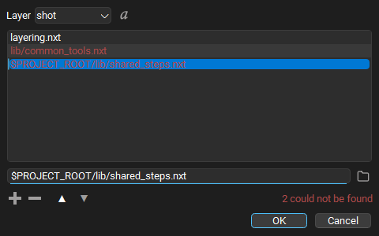
Pressing Enter in the field does not close the dialog. OK applies the
change to the open graph: the referenced layers are reloaded, the graph is
composited again, and the layer is marked unsaved. Nothing is written to
disk until you save the layer. Applying is one step on the undo stack, and
pressing OK with nothing changed does nothing at all.
Reload Source
Reload Source... reads a layer from disk again, for example when somebody else has saved a file your graph is built on. It is on every layer's right click menu, and in the File menu next to Save Layer, where it acts on the target layer.
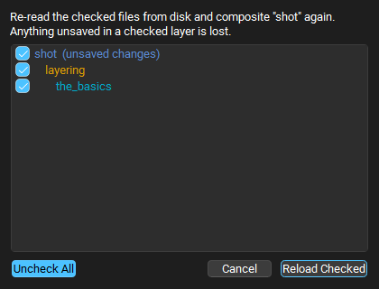
A layer is rarely just one file, so the dialog lists the layer and every layer it references, as deep as they go, indented to show which layer references which. Every row starts checked; uncheck the files you do not want read again, or use the Uncheck All / Check All toggle. A file referenced from several places is listed once. Rows with unsaved changes say so, because reloading them throws those changes away.
Reload Checked reads the checked files again and composites the graph. If a file now references something different, the layer stack follows it: layers can appear, disappear or change order. Reloading is one step on the undo stack, and undoing it puts back exactly what each layer held before, without reading the files again.
Build View
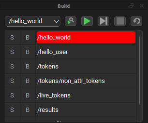
The Build View lists the nodes that will run, in execution order, from the start point chosen in the drop down. Next to the drop down are buttons to find the selected node, run the build, step through it, stop it and restart it.
- Find the selected node (the magnifier) scrolls the build so the node selected in the graph is at the top of the list, and marks its row. A selected node is not always part of the build: it may be disabled, outside the start point's branch, or not executable at all. In that case the Output Log says the node is not in the build, and the editor dings.
- The build stays current as you edit. Enabling or disabling a node, changing a start point, exec input, child order, instance path or parent, and renaming or deleting a node all update the list straight away.
- If the graph has changed since the last run in a way the cached runtime does not know about (a node was moved, renamed or deleted), the cache is cleared and rebuilt when the build is set up, before anything runs, and the Output Log says so.
Property Editor, History View, Output Log and Workflow Tools
See the tutorial videos for a tour of these. The History View lists every step on the undo stack, including reference edits and reloads.
Terms and Definitions
Stage
The stage is a collection of graphs, trees, and layers of nxt nodes that set the composition structure and execution order for an nxt file.
Every node has access to the STAGE object. When working with Python classes (besides the builtins) it is best to store those objects on the STAGE.
An example of how you would do that in a node's code is as follows:
my_object = ComplexData()
STAGE.complex_data = my_object
Another node later in the execution can access that object as follows:
STAGE.complex_data.a_method()
Stage attributes and composition
Note that each layer is also a node, and those nodes get composited to the STAGE object. Each node is parented to that object and inherit the attributes of it. This can be useful for defining "global" variables, or a state that needs to propagate into the entire graph.
Node
A node is a container for code (or compute) and a collection of attributes. Every node contains a single code block that is executed when a node is run. Execution order is defined both by hierarchy and connections to execution plugs on the nodes.
Attributes
Nodes contain attributes that are read from and written to from inside a node’s code block. Attributes can also be connected to inputs and outputs of other nodes via tokens in attributes, token paths within the code block, or dragging and dropping attribute connections between nodes.
At editor time (before the graph has begun executing) attribute values can be composited into other attribute’s values or into the text of a code block via ${path/to/node.otherattr}_rest_of_attr_value.
A node’s local attributes can be resolved by name alone via ${attrname}
Hotkeys
The raw/composited state can be visualized by toggling editor resolution on and off using Q, W, E.
NXT includes a full hot key editor. (Window > Hotkey Editor)
Example
The node at /path/to/node has the attribute otherattr with the value simple_stupid, and our local node has an attribute named myattr with the value never_eat
| Unresolved | Resolved |
|---|---|
| keep_it_${path/to/node.attrname} | keep_it_simple_stupid |
| ${myattr}_shredded_wheat | never_eat_shredded_wheat |
Cached view
Cached view should only be used to inspect and debug your data. It should not be considered accurate, especially if you are changing the data via the self.attribute paridigm. Any data that NXT is not confident in will be drawn with red hashes.
A node’s local attributes can be changed inside a node’s code block following python convention as seen below.
self.attr_name = 'example code'
print(self.attr_name + ' is always boring.')
While executing, the Stage can have arbitrary attributes add/set/retrieved on it, that will be available to all nodes, as seen below. Note: Inside a node’s codeblock the stage is accessed via all caps STAGE
STAGE.anyattr = 'anything you want'
print(Stage.anyattr)
Attribute connections
It is best practice to display inter-node dependencies via hierarchy or connections of attributes, rather than hide that dependency in the code. This will make your layers more portable and friendly to other users. Despite this best practice, other nodes and their attributes can be accessed inside a code block using STAGE.lookup('path/to/node') and STAGE.lookup('path/to/node.otherattr').
Tokens
A token is like a reference or pointer to another token or value. OS style pathing is used to resolve attribute and file tokens.
Attribute token syntax is ${}: if it can resolve, it substitutes the attribute, if not it will be empty.
If a token is empty it will resolve to BADRESOLVE.
${attribute}
${/absolute_node_path.attribute}
${../relative_nodepath.attribute}
File validation syntax ${file::}: this will always resolve to a real file, and will return an empty string if the file doesn't exist. Used to validate files for reading.
${file::file.nxt}
${file::C:/absolute_path/file.nxt}
${file::../relative_path/file.nxt}
File path token syntax ${path::}this will attempt to resolve to a valid path. If not, it will be empty. Used to expand paths for writing.
File path token syntax ${contents::} will include the contents of an external file. For example, ${contents::${file::external.py}} will include the contents of external.py in the attribute, compute, and it will resolve tokens written within this file.
File list token syntax ${fileslist::} will list valid historical filepaths at the same path.
Imagine you have /node.my_file = ${file::weights.json} on several layers in different directories, all saved in different folders.
If you then used a token like ${filelist::/node.weiths_file} you would get a list of file paths to the weights.json file in each of the layer's save folder.
This would allow you to collete and parse data from multiple reference layers:
all_the_data = {}
for filepath in ${filelist::/node.weiths_file}:
all_the_data.update(json.load(filepath))
File list validation
The filelist:: token only returns valid filepaths to existing files.
Relative file resolution
The ${file::} and ${path::} tokens will resolve relative paths based on the parent folder of the current display layer.
Using an external IDE
The ${contents::} token allows the use of an external IDE for authoring your compute blocks.
Tokens are not python template strings, even though they share the syntax.
Quote behavior in tokens
Since all attribute values are stored and processed as strings in NXT before they are composed as python objects, you have to manually manage string attributes. The value will substitute as written. In some cases, it makes sense to have string attributes in quotes, in other cases, it makes sense to add quotes in the code block.
For example if you had an attribute side set to a value of L
foot_${side} and 'foot_' + '${side}' are equally valid. This really comes down to convention.
There is a simple w() convenience function to assist with adding quotes when using a python string object as a string.
my_attr = 'quotes go away when it becomes a string object'
self.attribute = w(my_attr)
my_attr can now be used by downstream nodes as a string.
Compute
The compute block/code block is standard python code, with the exception that it will deep-resolve tokens over 1000 levels deep. (should this be a preference?)
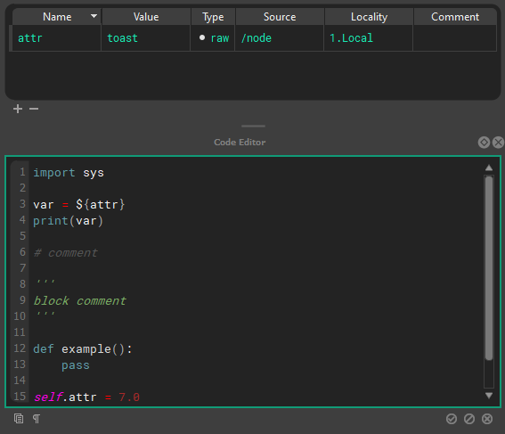
Hotkeys
The raw/composited state can be visualized by toggling editor resolution on and off using Q, W, E.
numreturn or ctrl+enter or clicking off the code will accept your edit
tab and shift+tab handle multi-line indents
NXT includes a full hot key editor.(Window > Hotkey Editor)
Execution Order
Stage/Layer Node
Stub for this feature once new layer editor arrives
Execution Root
A stage can have root nodes with no parent node and no node connected to it’s input execution plug. Use execute tags to define the order
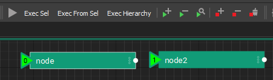
Execution Plugs
Nodes have execution plugs on their left and right to determine execution order. Nodes are executed from left to right along the execution chain specified by these connections.
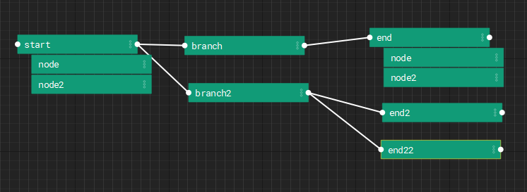
Danger
We don't have checks for circular dependencies yet. So don't setup loops.
Hierarchies/Stacks
Nodes have relationships we refer to as “parent”, “child”, and “sibling” to describe their relationship to one another inside the stage to influence composition and execution order.
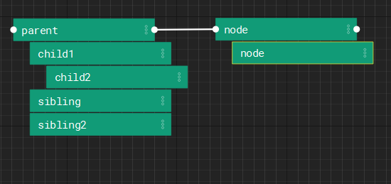
To begin execution from a given node, the first node is run, followed by a depth first execution of each of it’s descendants. Following the execution of the descendants, the root node whose input execution plug is connected to the current node’s output execution plug will be run following the same logic.
Stage Composition
Layers
Layers are designed to be composited (combined) to create a hierarchy of instructions that can be reused and repurposed by several NXT users for use on several assets or workflows. Multiple layers can be referenced and nxt seamlessly combines them into a single composite layer.
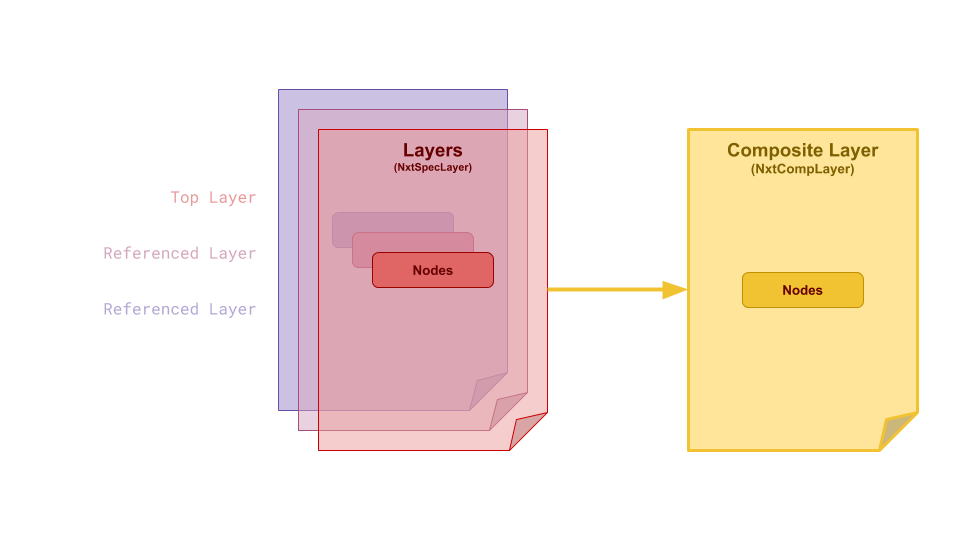
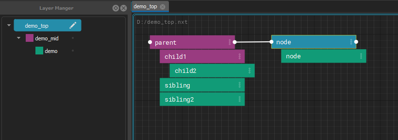
All of the layers in your file are composited together to produce final code to execute. Each layer has the power to change as much or as little as is needed to customize the composited node’s attributes and code block. These changes are stored in the file they are made on, keeping referenced files safe to use for many purposes.
Layer color propagates into nodes an also attributes.
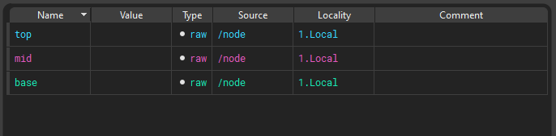
References
A layer pulls other layers in through its references. They are stored in the layer's file as a list:
"references": [
"base_steps.nxt",
"$PROJECT_ROOT/lib/shared_steps.nxt"
]
References are a stack: the first one in the list is the strongest of them, directly below the layer that references it, and each one after it is weaker. A referenced layer can have references of its own.
Edit them with the Reference Editor (right click a layer in the Layer Manager > Edit References...), or add one with Reference Layer Above/Below and Reference Builtin Graph from the File menu. To pick up changes somebody else saved to any of these files, use Reload Source.
How references are found
A reference is stored exactly as it was written, which is often only part of
a path. Environment variables ($NAME) and ~ in it are expanded first.
Then:
- An absolute path is used as it is.
- Anything else is looked for under each folder listed in the
NXT_FILE_ROOTSenvironment variable, in order. Separate the folders with;on Windows and:on Linux and macOS. - If no root has it, it is looked for relative to the folder of the layer that holds the reference. That is the layer's own folder, not the folder of the top graph and not wherever the editor was started.
The first file found is used. The same order is used when a graph is opened, when a reference is added in the editor, when a layer is reloaded with Reload Source, and by the Reference Editor's resolved view, so they always agree.
For example, with NXT_FILE_ROOTS=/projects/show_a;/projects/library, the
reference lib/shared_steps.nxt is found at
/projects/show_a/lib/shared_steps.nxt if it exists there, otherwise at
/projects/library/lib/shared_steps.nxt, and otherwise at
lib/shared_steps.nxt in the referring layer's folder. Because what is
stored is the partial path, the same graph keeps working on another
machine, or for another project, with different roots.
A root wins over a file beside the layer
Because the roots are tried first, a file under a root is used even when
a file of the same name sits next to the layer. This is deliberate: put
a folder holding your working copies first in NXT_FILE_ROOTS, and a
graph that references rig_steps.nxt picks up your working copy of
rig_steps.nxt instead of the published one beside it, without
changing the graph. Take the folder out of NXT_FILE_ROOTS to go back.
To always use one particular file, reference it by an absolute path, or
by a path built from an environment variable.
The Reference Editor shows where each reference resolves on this machine with its resolved toggle, and the tooltip on a row says where nxt looked.
References that cannot be found are kept
If a referenced file cannot be found, for example because it lives on a share this machine cannot see, the graph still opens without that layer, and the failure is logged. The reference itself is kept on the layer exactly as written, so saving the layer does not remove it. The Reference Editor draws such references in red.
Composition Inside Node Hierarchies
When a node is a child of another node, it inherits its attributes from that node which can be overwritten locally on the node.
Instancing
Instancing allows you to reuse nodes from other parts of the graph with specific overrides.
Instances in NXT can be simple and powerful. But they can also be extremely complicated with mind-bending edge cases. In simple terms, you can think about an instance as a clone of another node. It's like a live copy. But it's a bit more nuanced to think about an instance like an additional parent that's outside the hierarchy.
Example
- If you create a node, don't add any attributes or code, it will just look like a clone of the instance source.
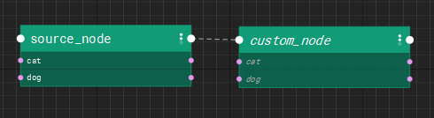
- If you create a node with unique attributes it will look like the instance source is another parent. All the attributes will composite from the instance source, and the local attributes will be visible as well.
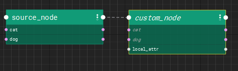
- If you create a node with attributes named the same as the instance source, the local attributes will have a stronger opinion and overwrite the instance values. In this case,cat exists on custom_node so it's value wins.
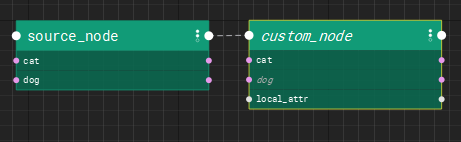
The children of the instance node get inserted into the hierarchy as proxy children. This data exists only as a result of the composite. The are not local saved data. Proxy children are drawn in a hashed style to make it clear you haven't touched the data.
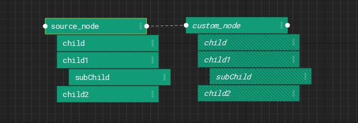
As soon as you begin to edit proxy children, they are converted into real editable nodes and exist in the hierarchy.
Note
The hierarchy has the final opinion in the composite. UNLESS the node has an local opinion on the data.
- Layer
- Node parent
- Node
- Instance parent
- Instance
Example
Build a base arm. Instance it twice. Change L to R, done.
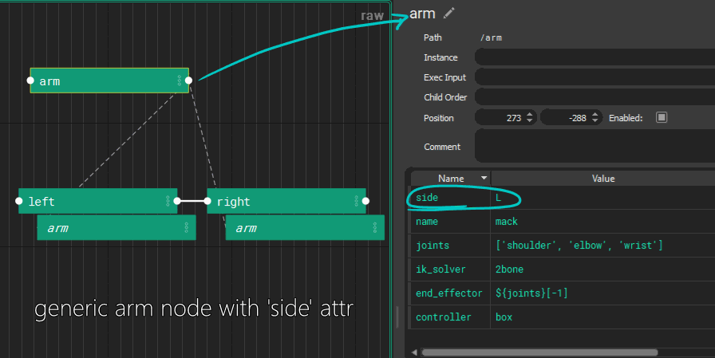
An instance of a node inherits data like a child. It creates proxy children of the instance source’s children, and can be arranged into a separate parent-child relationship as it’s instance source.
Most instance attributes are carried over. Execution input is never inherited. Child order is inherited by instances but not by children.
Data comes from the hierarchical parent as well as the instance source, with hierarchical parent having final word. Instance execution order is defined by the hierarchical parent.
Danger
If a node instances itself, or any ancestor or descendants, it will crash. It's best (because that's all thats possible) to only instance from other hierarchies or sibling nodes
NXT file spec
NXT files follow standard .json file specifications with a few specific keys in the root dictionary.
- Required:
version- str, graph version number - Optional:
alias- str, nice name for layer.
color- str, hex color.
mute- bool, mute layer when loaded as top layer.
solo- bool, solo layer when loaded as top layer.
references- list, string file paths to reference layers, ordered top to bottom (strong to weak). File paths can be relative.meta_data- dict, data about the graph not affecting its execution or composition.
nodes- dict, key of/full/node/pathand value of a node dict.
Node Dict
The node dict is what holds all the local opinions (values) about a node. All the keys are optional, however we recommend having at least 1 key and value, otherwise it is best to just delete the node.
child_order- list, strings of children node names in the order they should be executed.comment- string, think of this like a node's docstring.code- list, string lines of code that the node will run when it is executed.enabled- bool, iffalsethe node will not execute. Should be omitted from the dict unless explicitly needed as nodes with no key are assumed enabled.execute_in- str, path to root node whose hierarchy executes directly before this node's hierarchy. Only applicable on root nodes.instance- str, full or partial node path of node this node should derive its instance data from. This path should not be an ancestor, descendant, of this node nor the path of this node.start_point- bool, iftruethe node will be treated as a start node. Only applicable on root nodes.
Design Philosophy
Nobody will ever read this pretentious wall of text, but it was an important part of the development process. We hope you find it interesting, and you may find your way here if your start to dig deeper and wonder why things are the way they are.
Discovery
Nxt provides a visual map/model of user facing attributes that can be understood at a glance, and presents the code in context. This invites the user to extend and modify the functionality.
Nxt is designed around making processes and code as accessible as possible with low overhead.
-
Artists can modify attributes on code templates and learn to make code changes that would normally require a TD.
-
TD’s can establish layered templates for processes and write nodes and graphs.
-
Developers can provide Nxt ‘factory nodes’ for using their tools without writing a custom UI.
Functional/Procedural
Nxt follows a functional model. It eschews object oriented inheritance with a layer model. This allows data to be inspected on the fly and easily read.
Why not visual programming?
Nxt differs from a visual programming environment where every function (math, concatenation, data, flow control) is wrapped up in a node. Fully visual programming environments result in sprawling graphs. While the functions are readable, they are not dense. Nxt displays code standard text notation but creates a visualization for the data.
-
VP graphs can be tedious to construct. A simple operation can often require a dozen nodes but could be represented in 3 lines of code.
-
VP graphs are code under the surface anyway, so to extend the functionality, you need to write code, or construct graphs of graphs.
-
VP is a great tool for visualization of your data and flow, readability, experimentation, and discovery.
-
NXT is half visual. Half code. Seeks to keep the best parts and remove the friction for more seasoned developers.
Why not Houdini?
Houdini is a tool for building tools. It’s a visual processing engine. Can’t it do all of this already?
-
Houdini doesn’t do layering
-
Houdini is great, but maybe not the best at everything
-
Artists have decades of experience in other tools
-
Large segments of production already built around need to be built around Maya, Nuke, Unreal
-
HDA’s are black boxes and can be slow in host applications
-
PDG is great, and expensive.
Application structure
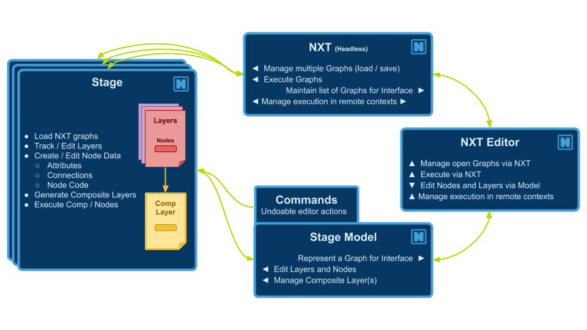